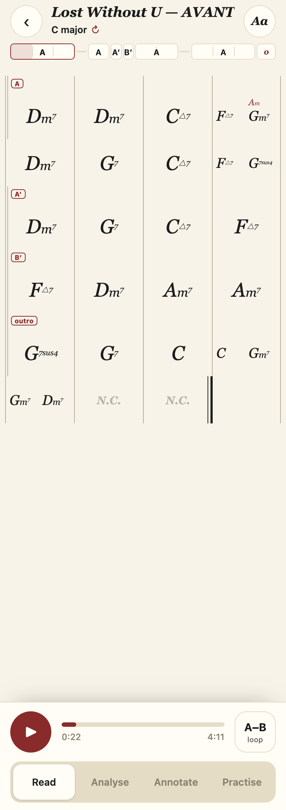
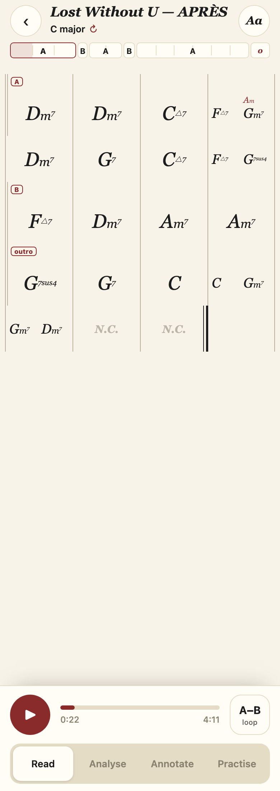

Robin Thicke, 0DdCoNbbRvQ · 2026-10-01 · commit 631c071
En une ligne : ton découpage ne contient que A, B et une outro. Le chart inventait A′, A″ et B′. C'est corrigé par deux règles générales. L'outro, elle, vient de ton fichier.
AVANT · APRÈS · San Francisco Street APRÈS (seul autre morceau touché)


| Imprimé | Mesures (1 = première) | Ce que dit ton fichier | Qui l'a inventé, et pourquoi |
|---|---|---|---|
| A′ | 34–37 : Dm7 | G7 | C△7 | F△7 | A | _ireal_cascade (folding.py). Ce A de 4 mesures devait se raccorder au grand A. Le test exigeait la mesure accord pour accord : la 4e mesure n'a pas le Gm7 de relance (F△7 au lieu de F△7 Gm7). Refusé → prime. |
| A″ | 58 : N.C. seul | A (1 mesure) | Même fonction. Un silence ne ressemble à aucune mesure du A → prime. |
| B′ | 38–41 : F△7 | Dm7 | Am7 | Am7 | B | Même fonction. À égalité de passages, l'« hôte » de B était le premier B : la mesure 25, un N.C. seul. Le vrai B (4 mesures) est plus long que son hôte, il ne peut pas s'y fondre → prime. |
| outro | 83–89 | outro | Personne : c'est ton étiquette (validée le 18/09). |
| « bridge » | — | — | Aucune étiquette « bridge » n'existe dans le chart. Je suppose que tu parlais du B′. |
Garde-fou (sous-replier plutôt que sur-replier) : un passage qui joue autre chose (Em7 | A7 | Dm7 | G7 contre la boucle A) garde son prime — c'est testé.
Ce qui reste : le bloc A écrit fait 8 mesures, sans ×N. Ce n'est pas lié à ce correctif : c'est la règle de boucle (commit 0031e9a, une autre session) qui refuse de factoriser, parce que certains tours jouent G7sus4 là où les autres jouent Gm7. Le passage 34–37 est écrit avec le Gm7 du bloc, qu'il ne joue pas lui-même.
| Mesure | 83 | 84 | 85 | 86 | 87 | 88–89 |
|---|---|---|---|---|---|---|
| Joue | G7sus4 | G7 | C | C Gm7 | Gm7 Dm7 | N.C. |
| Boucle A à cette place | Dm7 | G7 | C△7 | F△7 Gm7 | Dm7 | — |
Ce sont les accords du A (même tonalité, ressemblance d'accords 0,75–1,0 à la boucle), mais avec une vraie cadence finale : G7sus4 tenu, puis G7 → C tenu deux mesures (la boucle, elle, ne se pose jamais sur C), puis un fondu. C'est le dernier A qui finit autrement.
La tension : si tu renommes 83–89 en A dans l'outil, le chart écrira A′. Deux mesures sur cinq diffèrent vraiment (G7sus4 à la place de Dm7, C à la place de F△7), et la règle « sous-replier » les garde à part. Je n'ai pas changé ça sans ton avis. Trois choix :
J'ai comparé l'ancien et le nouveau code sur tes 23 morceaux découpés à la main. Un seul autre morceau change : San Francisco Street. La mesure 71 (D△7 G△7, étiquetée A) était imprimée comme un second bloc « A′ », qui doublonnait le vrai A′. Elle rejoint maintenant le A. Aucun accord n'a changé ailleurs.